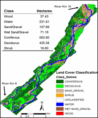

Talk to any Alaskan, and the importance of 'fish' for the State and its residents will be apparent in minutes. Remote sensing reserves great potential for supporting the fishery sector, as is well summarized in this introductory manual published by FAO. The biggest contribution of remote sensing is in the area of habitat mapping and prediction. Such habitat could be for fishes, birds, or other fauna. I started collaborating with fisheries faculty in 2004. More recently, I have extended this collaboration to faculty from Arctic Biology.
View related presentation (PDF - 1.9 MB) given at the ASF seminar series (external link).
Smikrud, K., Prakash, A., and Nichols, J., 2008, Decision based fusion for improved fluvial landscape classification using digital aerial photographs and forward looking infrared images. Photogrammetric Engineering and Remote Sensing, 74(7), 903-911. (abstract; request reprint for personal use).
Smikrud, K. and Prakash, A., 2006, Detecting and monitoring large woody debris in a part of the Unuk river, Alaska, using digital aerial photography. GIScience and Remote Sensing, 43 (2), 142-154 (abstract; request reprint for personal use).
F. Joseph Margraf
Jeff Nichols
Abby Powell
Cecil Rich
Amanda Rosenberg
Trent Sutton
Susan Sharbaugh
Tevis Underwood
Mark Wipfli